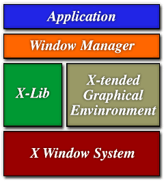

Хотя ОС Linux представляет собой очень мощную и развитую операционную
систему, но, если работать с ней только через интерфейс командной строки, она
довольно трудна в использовании и "недружелюбна" к пользователю. Все необходимые
операции выполняются путем запуска отдельных команд, перечень которых огромен и
которые надо практически помнить наизусть.
Широко известной альтернативой
интерфейсу командной строки является так называемый "оконный интерфейс", который
вообще-то правильнее называть графическим интерфейсом. Он обеспечивает
дополнительные удобства для пользователя, в частности, возможность запуска
программ в отдельных окнах, обозначения программ (или других обьектов) в виде
маленьких картинок (иконок), возможность оперировать с обьектами с помощью
мышки, а также гораздо большую плотность информации на том же пространстве
экрана.
Для ОС Linux существуют средства, обеспечивающие дружественный к
пользователю графический интерфейс. На первый взгляд он очень похож на широко
известный графический интерфейс Microsoft Windows, но его внутреннее устройство
принципиально отличается. В этой главе мы рассмотрим, как этот интерфейс
работает и как его настроить.
7.1. XFree86 и его составные части.
Графический интерфейс в Линукс
строится на основе стандарта X Window System (заметьте, что Window, а не
Windows) или просто "X" (в просторечии - "иксы"), первоначальный вариант
которого был разработан в 1987 году в Массачусетском технологическом институте.
Начиная со второй версии этот стандарт поддерживался консорциумом X, созданным в
январе 1988 г. с целью унификации графического интерфейса для ОС UNIX. С 1997
года консорциум X преобразован в X Open Group. В
настоящее время действует версия 11 выпуск 6 стандарта на графическую подсистему
для UNIX-систем, которая кратко обозначается как X11R6.
Свободно распространяемая реализация стандарта X11R6 для UNIX-систем с
процессорами 80386/80486/Pentium (в том числе для ОС Linux) была создана группой
программистов, которую вначале возглавлял Дэвид Вексельблат (David Wexelblat).
Эта реализация известна как XFree86 и
может использоваться не только в Linux, но и в System V/386, 386BSD, и других
версиях UNIX для систем на базе процессоров x86. В настоящее время выпущена уже
4-ая версия XFree86, однако и 3-я версия еще широко используется и входит в
состав основных дистрибутивов Линукс.
Система X Window построена на основе модели "клиент/сервер". Правда, модель
эта в данном случае используется как бы в "перевернутом" виде. Дело в том, что
X-сервер работает на компьютере пользователя (а не на каком-то удаленном
"сервере") и обеспечивает вывод изображения на экран монитора.
X-сервер - это основная программа, которая работает непосредственно с
"железом" (видеосистемой, устройствами ввода и динамиком). Может быть для
некоторых читателей назначение этой программы будет понятнее, если назвать ее
драйвером видеосистемы. Эта программа захватывает оборудование и предоставляет
его возможности другим программам как ресурсы (собственно, именно поэтому она и
называется сервером) по особому протоколу, который так и называется, X-протокол
(или протокол сетевой связи - X Network Protocol). Кстати, специализированный
компьютер, на котором исполняется исключительно X-сервер, называется
(аппаратным) X-терминалом.
Но сам X-сервер изображение не формирует, он только "доставляет" графику
видео-драйверу. Если запустить только X-сервер, Вы увидите просто серый экран с
характерным крестиком курсора посредине. С помощью мыши курсор можно перемещать
по экрану. И все! На нажатие кнопок мыши и клавиш никакой видимой реакции не
следует. И невидимой тоже - сервер готов передавать эти сигналы своим клиентам,
а клиенты пока не запущены. Хотя на самом деле некоторые комбинации клавиш X
перехватывает и обрабатывает. Это [Control-Alt-Backspace] - завершение работы
сервера (если эта возможность не запрещена при конфигурации), [Control-Alt-+/-]
- "горячее" переключение доступных видеорежимов, и [Control-Alt-FN] -
переключение в другую виртуальную консоль. Чтобы получить на экране какие-то
более содержательные изображения, одного X-сервера недостаточно, надо запустить
менеджер окон и хотя бы одну программу-клиент, которая будет формировать
изображение. В роли "клиентов" X-сервера выступают приложения, работающие с X
Window: GIMP, Corel WP, xterm и другие.
Между клиентами и сервером стоят еще два очень важных компонента графического
интерфейса: библиотка графических функций X-Lib и оконный менеджер. X-Lib
содержит графические функции, которые обеспечивают выполнение низкоуровневых
операций с графическими образами. Когда X-приложение запускается, оно передает
управление менеджеру окон. Менеджер окон вызывает функции из X-Lib для
управления дисплеем и выполнения любых преобразований изображений в окнах.
|

Рис. 1. Архитектура графической системы в
Linux
(рисунок заимствован из статьи J.Barr-а в LinuxWorld,
http://www.linuxworld.com/lw-1999-04/lw-04-vcontrol.html)
|
Расширенные графические среды типа Motif,
CDE, KDE, GNOME, GNUStep и так далее не замещают перечисленные выше компоненты
системы X Window, а расширяют и дополняют их. KDE, например, добавляет
библиотеку графических функций Qt в дополнение к X-Lib. Motif имеет собственный
набор графических функций. GNOME использует GTk+, которая составляет основу
GIMP. Кроме того в GNOME используется также CORBA (The Common Object Request
Broker Architecture) и билиотека Imlib для дальнейшего расширения возможностей
графической подсистемы.
Менеджер окон обеспечивает выполнение всех операций с окнами: прорисовку
рамок, меню, иконок, полос прокрутки и других элементов окна, а также
предоставляет возможность изменять вид и положение окна в процессе работы в
соответствии с потребностями пользователя.
Менеджер окон также вызывает соответствующие функции для программ-клиентов в
тех случаях, когда пользователь взаимодействует с приложением с помощью
клавиатуры и мыши. Именно поэтому при настройке XFree86 необходимо задать не
только видеокарту, но и мышь и клавиатуру. Оконному менеджеру нужно знать
характеристики этих устройств, чтобы выполнять свои задачи.
Поскольку клиент и сервер являются отдельными процессами, они могут работать
на разных компьютерах, а взаимодействовать по сети. Приложения можно запустить,
например, на мэйнфрейме, а картинка будет выводиться на экран персонального
компьютера. Эта очень мощная особенность системы X Window является одним из
основных отличий ее от MS Windows.
Кстати, в Linux (и вообще в UNIX) нет такого жесткого деления между
графическими и текстовыми программами, как в MS Windows или OS/2. С точки зрения
системы нет разницы между программой, работающей в графике, и обычной. Программы
для графического режима запускают как обычные программы, т.е. из командной
строки, из Midnight Comander'а и т.п. Единственным необходимым условием для их
работы является то, что должен работать X-сервер. При необходимости программа
сама обращается к X-серверу (через TCP/IP в общем случае, и через локальный
сокет в частном, когда X-сервер и X-клиент работают на одной машине). Делает она
это не с помощью специальных отношений с системой, а обычными вызовами socket(),
connect(), etc. Занимается всем этим библиотека xlib. Все, что ей надо для
работы, это знать, где искать X-сервер (для этого используется либо переменная
окружения DISPLAY, либо опция в командной строке). Более того, существуют даже
программы, которые умеют работать и с X-сервером и с обычным текстовым
терминалом (например - emacs) и сами разбираются при старте, как именно им
работать в данном случае.
Конечно, приведенный выше рисунок очень схематичен. К примеру, как мы уже
упоминали, взаимодействие библиотеки X-Lib с сервером в общем случае
осуществляется по протоколам TCP/IP. Так что следовало бы еще добавить
квадратик, отображающий программное обеспечение, реализующее протоколы TCP/IP.
Еще одним важным ресурсом графической подсистемы являются шрифты. Оперировать со
шрифтами может как непосредственно X-сервер, так и специальная программа,
которая называется сервер шрифтов, которую тоже надо бы как-то изобразить на
рисунке.
Для каждой из типовых компонент графической системы существует множество
конкретных реализаций. В состав пакета XFree86 версии 3 входят несколько
различных серверов, причем выбор конкретного сервера зависит от того, какие у
Вас видеоплата и монитор (выбор определяется видеоадаптером, поскольку именно им
управляет X-сервер, а уж видеоадаптер управляет монитором). Например, сервер
XF86_Mono - это сервер для монохромных видео-режимов; XF86_S3 - сервер для карт,
основанных на S3; XF86_S3V - сервер для S3 ViRGE и ViRGE/VX; XF86_SVGA - сервер
для карт, работающих в режимах Super-VGA.
Пока что не все выпускаемые в мире видеоадаптеры поддерживаются X-серверами,
которые созданы для Линукс. Список поддерживаемых видеоадаптеров можно найти в
файле /usr/X11R6/lib/X11/doc/README, а в версии 3 - и в отдельных для каждого
производителя видеоадаптеров файлах README.name, расположенных в том же каталоге
(здесь name - краткое название фирмы - изготовителя). Лучше всего перед началом
настройки графического режима определиться с тем, какой сервер Вам нужен, для
чего внимательно прочитать упомянутые только что файлы. Последнюю версию списка
поддерживаемых видеокарт Вы можете найти на сайте http://www.xfree86.org/.
В четвертой версии XFree86 уже один X-сервер для большинства видеоадаптеров,
называется он XFree86 и располагается в каталоге /usr/X11R6/bin/. Обычно на него
делается ссылка с именем X, так что запустить X-сервер можно просто введя в
командной строке букву X.
Различных менеджеров окон тоже существует очень много и Вы можете
использовать любой из них по своему выбору. Вот несколько примеров:
fvwm - Free Virtual Window Manager, наиболее распространенный
менеджер окон.
fvwm2 - улучшенный вариант fvwm, позволяющий, в
частности, использовать различные темы рабочего стола и динамические меню
(themes and dynamic menus). Официальный сайт разработчиков FVWM и FVWM2 - http://www.hpc.uh.edu/fvwm/.
fvwm95 - менеджер окон с графическим интерфейсом в стиле Windows 95.
IceWM (http://berta.fri.uni-lj.si/~markom/icewm)
- это оконный менеджер, который может эмулировать различные стандарты оконных
систем (в частности, OS/2 Workplace Shell), имеет, по некоторым отзывам,
довольно маленький обьем и быстро работает.
AmiWM (http://www.lysator.liu.se/~marcus/amiwm.html)
- оконный менеджер в стиле Amiga Workbench.
mlvwm (http://www.bioele.nuee.nagoya-u.ac.jp/member/tak/mlvwm.html)
- эмулирует MacOS.
Enlightenment (http://www.enlightenment.org/) - один
из самых развитых менеджеров окон.
Разные менеджеры окон могут обеспечивать различный вид окон за счет
использования различных рамок и оконных меню. Но все они используют одну и ту же
базовую графическую утилиту X Window - X сервер.
Итак, Вы теперь в общих чертах представляете, из каких основных частей
формируется графический интерфейс в Линукс. Как видите, строится он по
модульному принципу и вполне возможно "собрать" его самостоятельно из отдельных
компонент. Но для начинающего пользователя этот путь не самый легкий. К счастью,
и не обязательно этим путем идти, поскольку разработаны (и включены практически
во все дистрибутивы) так называемые интегрированные графические среды. Наиболее
известными представителями таких сред являются KDE (http://www.kde.org/) и GNOME (http://www.gnome.org/).
Основу интегрированной графической среды KDE (K Desktop Enviroment)
образует расширенная библиотека графических функций Qt фирмы Troll Tech
(http://www.trolltech.com/). С использованием этой библиотеки построены
собственный оконный менеджер kwm, файл-менеджер kfm, центр
управления KDE (аналог панели управления Windows) и множество других компонент,
вплоть до собственного офисного пакета KOffice. Сказанное не означает, что все
эти компоненты разрабатываются какой-то одной фирмой. Просто различные и
независимые разработчики используют единый подход, единую идеологию создания и
оформления программных продуктов. В результате получается функционально полный
пакет программ, в рамках которого могут быть решены практически все задачи
управления компьютером и программной средой (если не сказать, что вообще все
задачи, решаемые на компьютере).
В состав вышедшей недавно версии 2.1 KDE включен файловый менеджер Konqueror,
который предоставляет уникальные возможности доступа к файлам. Кроме того, что
он позволяет просматривать файлы большинства известных форматов на локальных
дисках, он является и Интернет-браузером, по своим возможностям вполне сравнимым
с Internet Explorer или Netscape Navigator.
Другой графической средой того же класса, что и KDE, является пакет
GNOME (GNU Network Object Model Environment), который разрабатывается в
рамках проекта GNU, а значит относится к классу свободно распространяемого ПО
(KDE до недавнего времени не полностью соответствовал этому понятию, потому что
библиотека Qt распространялась не на условиях GPL; хотя сейчас ситуация
изменилась и KDE тоже является свободно распространяемым). GNOME строится
на основе библиотеки графических функций GTk+.
Существуют и другие разработки интегрированных графических сред, которые,
однако, пока не достигли той степени развития, как KDE или GNOME, например,
dfm (http://www-c.informatik.uni-hannover.de/~kaiser/dfm/dfm.html)
- графическая среда, которая напоминает OS/2 Workplace Shell. Можно упомянуть
также Motif - коммерческий продукт, используемый во многих UNIX-системах,
или его бесплатный аналог LessTif, а также
Xview - Linux-версию интерфейса OpenLook фирмы Sun.
Приведенное выше описание дает общее представление о том, как строится
графический интерфейс в Линукс. К сожалению, установка и настройка графического
интерфейса Линукс пока не является простой задачей. Я попытаюсь ниже дать
некоторые рекомендации по настройке X Window для начинающих пользователей. Но
для того, чтобы подходить к процессу настройки осознанно, надо в общих чертах
представлять, как работает видеосистема Вашего компьютера.
7.2. Как работает видеосистема компьютера.
Вы должны понимать, что этот
раздел не является руководством для специалистов по созданию видеосистем.
Изложение работы видеосистемы здесь дается очень поверхностное, только с той
целью, чтобы читатель понимал значение параметров, которые ему придется как-то
изменять при настройке графического режима.
Видеосистема компьютера состоит из видеоадаптера и монитора (когда мы будем
говорить о мониторах, будут иметься в виду мониторы, построенные на
электронно-лучевых трубках).
Как Вы знаете, изображение на экране монитора состоит из отдельных точек.
Точки формируются электронным лучом и располагаются в виде строк. Монитор делает
две независимых вещи: развертку луча и высвечивание отдельных точек, из которых
строится изображение на экране. Управление монитором заключается в том, чтобы
задать число точек в строке (разрешение по горизонтали), число строк на экране
(разрешение по вертикали) и интенсивность каждого из трех основных цветов в
каждой точке.
Функцию управления монитором осуществляет видеоадаптер. Видеоадаптер передает
в монитор три сигнала: видео сигнал (RGB), строчную синхронизацию (HS), кадровую
синхронизацию (VS). По сигналу горизонтальной (строчной) синхронизации
происходит возврат луча с конца каждой строки к началу следующей, а сигнал
вертикальной (кадровой) синхронизации определяет момент возврата луча из правого
нижнего угла экрана в верхний левый. Частоты генерации этих двух сигналов
(измеряемые числом импульсов в секунду) необходимо знать для правильной
установки и настройки X сервера. Значения частот горизонтальной и вертикальной
синхронизации должны быть указаны в документации к Вашему монитору. Частота
вертикальной синхронизации (обозначим ее VSF) обычно указывается в герцах
(Hz) и находится в пределах 50 - 180 Гц. Частота горизонтальной синхронизации
(HSF) задается в килогерцах (KHz) и принимает значения в диапазоне от 31
до 135 КГц.
Современные мониторы обычно являются многочастотными, то есть допускают выбор
частот вертикальной и горизонтальной синхронизации из определенного диапазона
допустимых значений. Некоторые мониторы (особенно дешевые) могут иметь несколько
фиксированных значений допустимых частот. Целесообразно выбирать максимально
возможные значения частот синхронизации из числа допустимых для получения
наилучшего разрешения. Однако будьте осторожны - установка значений, превышающих
допустимые, может повредить монитор!
Есть еще одна важная частота - число точек, которые могут быть отображены на
экране за одну секунду. Электронный луч перемещается по экрану с конечной
скоростью (которая ограничена не скоростью перемещения самого луча, а
параметрами микросхем видеоадаптера). В английской документации эта частота
называется "the card's dot clock". Будем называть эту частоту тактовой частотой
развертки и обозначать как DCF (dot clock frequency).
Следующий существенный параметр - это частота обновления экрана (которую
будем обозначать как SRR - screen refresh rate). Чем выше эта частота,
тем меньше устают глаза при работе с компьютером, потому что уменьшается
мерцание экрана. Не рекомендуется выбирать частоту обновления экрана меньше 60
Гц - частоты мерцания флуоресцентных ламп. Стандарт VESA рекомендует выбирать
для нее значение не менее 72 Гц.
Но задать очень большое значение частоты обновления экрана невозможно, потому
что она не может быть больше, чем тактовая частота развертки (DCF), поделенная
на произведение числа точек в строке и числа строк на экране. На самом деле
частота обновления экрана еще меньше, потому что на перемещение электронного
луча от конца строки в начало следующей и из левого нижнего угла экрана в правый
верхний требуется некоторое время (то есть дополнительные такты работы тактового
генератора видеоадаптера). Кроме того, для создания четких границ изображения на
экране, электронный луч обычно перемещается на несколько точек левее и правее
видимой части части изображения, а также пробегает одну-две строки выше и ниже
изображения (это темные полосы, окружающие изображение на экране). Поэтому
фактически число необходимых для вывода изображения точек в строке (обозначим
его HFL - Horizontal Frame Length - размер фрейма по горизонтали) и число
необходимых строк на экране (Vertical Frame Length - VFL) больше, чем
размеры видимого изображения. Точнее
HFL = (число невидимых точек слева) + (число видимых точек в строке) +
(число невидимых точек справа) + (число тактов, необходимых для перевода луча к
началу новой строки).
Аналогичное соотношение действует для размера фрейма по вертикали -
VFL и поэтому имеет место формула:
SRR = DCF / (HFL * VFL).Именно эта частота и
является частотой обновления экрана (
SRR = VSF) и должна лежать в
границах, заданных для частоты вертикальной синхронизации Вашего монитора. Таким
образом, частота вертикальной синхронизации монитора и тактовая частота
видеоадаптера накладывают ограничения на предельное разрешение изображения на
экране.
Еще одно ограничение накладывается обьемом памяти на плате видеоадаптера.
Цвет каждой отдельной точки на экране формируется путем смешивания трех основных
цветов: красного (R), зеленого(G) и голубого(B). Интенсивность каждого из этих
трех цветов определяется уровнем сигнала в соответствующем луче (в цветном
мониторе каждая точка высвечивается тремя электронными лучами, которые
одновременно направлены в данную точку). Изображение для вывода на экран
формируется в видеопамяти, которая физически расположена на плате видеоадаптера,
но входит в общее адресное пространство оперативной памяти компьютера.
Изображение хранится в памяти в цифровом виде, и преобразование его в аналоговый
сигнал RGB является одной из основных задач видеоадаптера, для чего на плате
видеоадаптера обычно ставится цифро-аналоговый преобразователь - ЦАП.
Количество возможных цветов для каждой точки, очевидно, ограничено тем,
сколько различных уровней сигнала для каждого луча может сформировать
видеоадаптер, а также обьемом видеопамяти. Но обычно выходные сигналы
видеоадаптера обеспечивают число уровней, достаточное для отображения картинки,
записанной в видеопамять, так что определяющим параметром становится именно ее
обьем.
Формула, определяющая ограничения на разрешение экрана и количество
воспроизводимых цветов, очень проста :
(Объем видеопамяти в байтах) >= (число видимых точек в
строке) х (число видимых строк на экране) х (число байт на
точку).Например, если Вы хотите выбрать разрешение экрана
1024 х 768 и иметь 16 миллионов цветов для каждой точки (4 байта на точку), то
вам надо иметь 1024х768х4=3145728 байт памяти. Если же у вас всего 2 Мбайта
памяти, то придется либо выбрать меньшее разрешение, либо меньшее количество
цветов. Вы легко можете сами составить табличку соответствий между различными
комбинациями значений видеопараметров и объемом необходимой памяти.
О том, как вся эта теория применяется при настройке графического режима,
будет рассказано в следующем разделе.
В.А.Костромин
Последние изменения
в содержание файла внесены
8 марта 2001 г. |